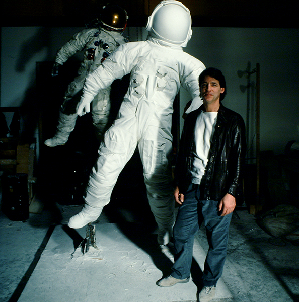

Sculpture

Commissions

Never simply Super Realistic, Nelson's work always questions the reality of physical existence, and appeals to some alienated modern sense of the existentially absurd...This overstuffed trash bag that invites wry comparison with the Elgin marbles, the Nike of Samothrace, and Bernini as well as Michelangelo, has something to say. Its exquisitely draped folds that delineate not some ideal torso but a load of technological rubbish are an ironic metaphor of our materialistic culture...
Kim Levin, Arts Magazine, October 1981